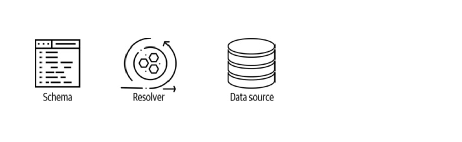
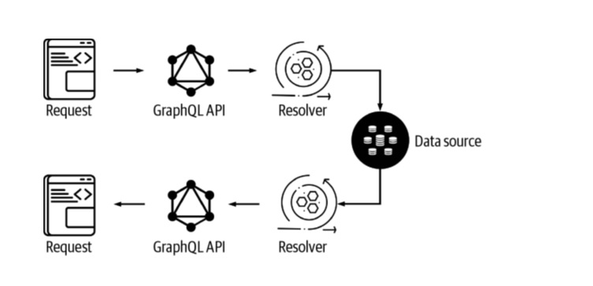

Introduction to GraphQL
what GraphQL is?
what a GraphQL API consists of
how GraphQL works?
What Is GraphQL?
GraphQL is an API specification. It is a query language for APIs and a runtime for fulfilling those queries with your data. It is, and can be used as, a replacement for REST and has some similarities to REST.
GraphQL was introduced by Facebook in 2015, though it had been used internally. Since 2012.
GraphQL allows clients to define the structure of the data that is required from an API call so that they can know exactly what data structure is going to be returned from the server.
Requesting data in this way enables a much more efficient way for client-side applications to interact with backend APIs and services, reducing the amount of under-fetching of data, preventing the over-fetching of data, and preventing type errors.
What Makes Up a GraphQL API?
A GraphQL API consists of three main parts: schema, resolvers, and data sources, as illustrated in Figure.
 Figure GraphQL API Design
The schema, written in GraphQL Schema Definition Language (SDL), defines the data model (types) and operations that can be executed against the API.
The schema consists of base types (data models) and GraphQL operations like queries for fetching data; mutations for creating, updating, and deleting data; and subscriptions for subscribing to changes in data in real time.
Here is an example of a GraphQL schema: 
Once the schema has been created, you can begin writing resolvers for the GraphQL operations defined in the schema (query, mutation, subscription).
GraphQL resolvers tell the GraphQL operations what to do when being executed and will typically interact with some data source or another API, as shown below.
GraphQL Operations:
- GET -> Quer
- PUT -> Mutation
- PATCH -> Mutation
- POST -> Mutation
- DELETE -> Mutation
GraphQL operations are how you interact with the API data sources. GraphQL operation can be similarly mapped to HTTP methods for RESTful APIs:
A GraphQL request operation looks like a JavaScript object with only the keys and no values. The keys and values are returned in the GraphQL operation response.
Here is an example of a typical GraphQL Query fetching an array of items:
This request would return the following Response:
You can also pass arguments into a GraphQL operation. The following operation is a query for a Todo, passing in the ID of the Todo you would like to fetch:
This request would return the following response:
Though there are many ways to implement a GraphQL server but, AppSync is a managed service that allows us to deploy a GraphQL API, resolvers, and data sources quickly and easily using the Amplify CLI.